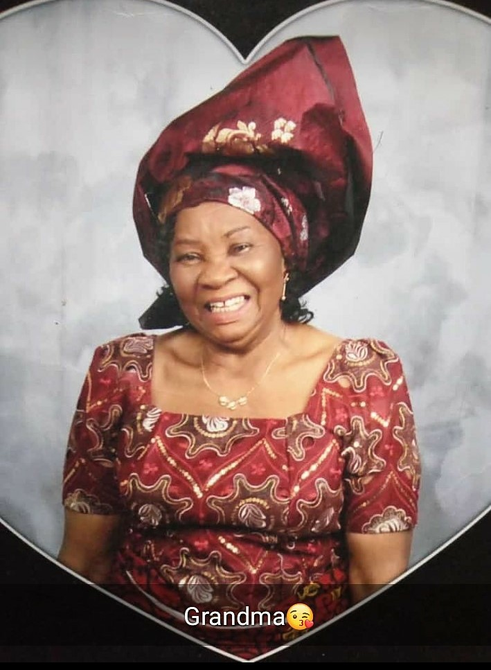

Mrs. Augustina Ifeanyi Ike
1939-2019
Madam Gold
Madam Gold

Madam Gold full of smiles
| Biography of Mrs. Augustina Ifeanyi IkeAugustina Ifeanyi Ike was born in 1939 to the family of Uchelunachi Onwu in Abor Umuagu Inyi, Oji River Local Government Area, Enugu State, Nigeria. She attended Sacred Heart School Inyi. During her academic years, she was known to be the fastest runner in Awgu Division. Hence, she was popularly called "Ele", meaning an antelope (antelopes are known for their fast run). Mrs. EZINNE AUGUSTINA IFEANYI IKE was a very loyal and hard-working child and this made her mother and grandmother to be very fond of her (as we were told). Her grandmother died in her arms, after showering her with blessings.
EZINNE AUGUSTINA IFEANYI IKE got married to Late Inspector Foster Ike of the Nigeria Police Force. She was a very industrious woman and she supported her husband in building up a solid family. Their marriage was blessed with 6 children, 2 boys and 4 girls. EZINNE AUGUSTINA IFEANYI IKE was a disciplinarian and she made sure that rules and regulations were maintained by her children. She was also a very loving and caring mother and grandmother. She also saw other children as her own. she was a lover of children and she would always bring herself low to interact with them. EZINNE AUGUSTINA IFEANYI IKE was many things to many people. Most of all, she was generous and hospital to all. Her generosity knew no bounds. She recieved strangers with open arms. She left no stone unturned, in making sure the less privileged who came in contact with her always left with smiles on their faces. She was like Dorcas of the New Testament. She traveled far and wide and always made sure she came back with gifts to share to many people both related and non-related. She was popularly called Madam Gold (a name deserving for a woman of integrity like her.) Madam Gold, was also dedicated to the church and she always welcomed ministers of God with joy. |
Madam Gold took ill in April 2018 and was rushed to Niger Foundation Hospital, Enugu for treatment. Even on her sick bed, she was thinking of helping people by sharing what God has blessed her with, with others. Infact, Ezinne Augustina Ike left a lot of legacies to be emulated by us her children, and all well- meaning people of Inyi. Her generosity, loving kindness, cheerfulness and dedication to God and service to humanity, is a story for many generations.
Ezinne Augustina Ifeanyi Ike after a protracted illness, died in the early hours of Friday 12th July, 2019😢😢. You lived a good life and we pray that you rest in perfect peace, till we meet to part no more.
-- Nnolum Cynthia Tochukwu (Grand-daughter)
If you have time, you should see more about this incredible human being on this video